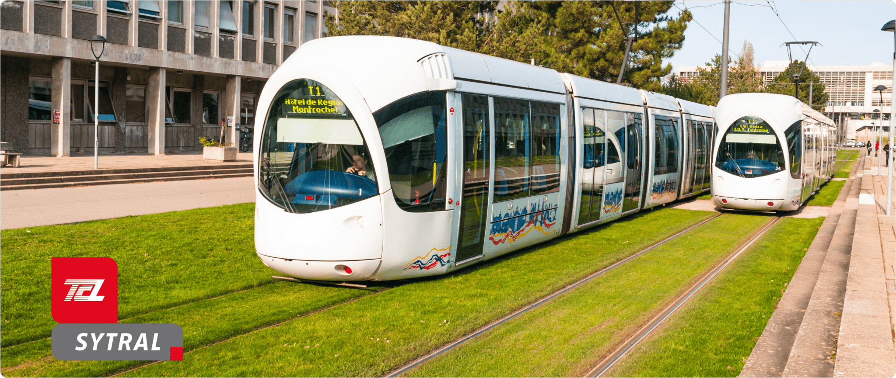

Roulez vert, voyagez léger : adoptez les transports doux
Trottinette et Vélo

Les pistes cyclables traversant le campus vous permettront de vous déplacer de manière rapide et en toute sécurité. Vous avez la possibilité de les employer au service de votre vélo, trotinette, skate ou roller.
Tramway
Les lignes de tramway TCL vous permettent de vous déplacer en toute sécurité et confort à l'intérieur et à l'extérieur du campus Doua. Ainsi, les lignes T1 et T4 desservent un moyen de transport efficace entre le centre-ville et la campus. A l'intérieur du campus Doua, les temps d'attentes (5-10 min) sont très courts. Servez-vous en pour vos déplacements quotidiens! En savoir plus
Vélo'v

Les vélos Vélo'v sont à votre libre disposition dans tous le campus (voir la carte ci dessous). C'est l'un des moyens de transport les plus recommendés et appréciés à Lyon. Pour plus d'information concernant les offres et conditions d'utilisation, rendez-vous sur le site officiel Vélo'v.
Nos chiffres clés
D'après une enquête...
60% des étudiants pensent que le tramway est le moyen de déplacement le plus rapide au campus.
66,7% recommandent la marche comme moyen de déplacement principal à l'intérieur du campus.
80% utilisent quotidiennement les transports en commun TCL pour se rendre à l'Université
30% des réponses sont en faveur des véhicules personnels légers